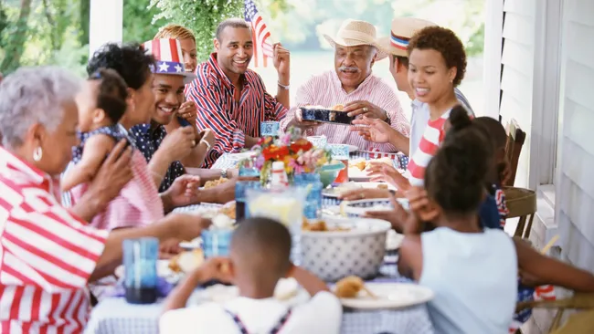
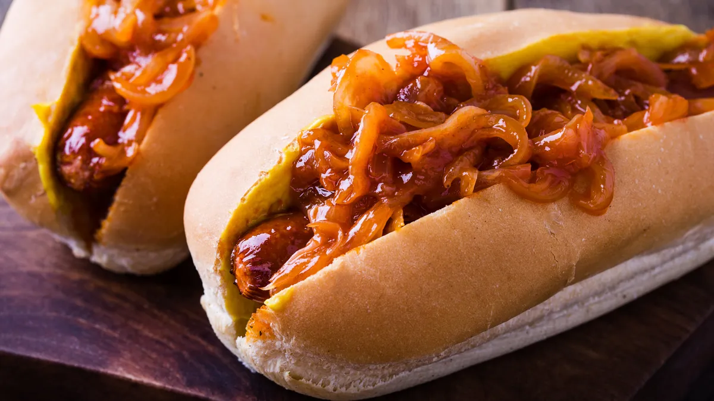

American culture: Traditions and customs of the United States
Refrences By Kim Ann Zimmermann, Callum McKelvie published November 4, 2022
American culture's languages, religion, sports, styles, foods, arts and holidays
 American culture encompasses the customs and traditions of the United States. "Culture encompasses religion, food, what we wear, how we wear it, our language, marriage, music, what we believe is right or wrong, how we sit at the table, how we greet visitors, how we behave with loved ones, and a million other things," said Cristina De Rossi, an anthropologist at Barnet and Southgate College in London.
The United States is the third largest country in the world with a population of more than 332 million, according to the U.S. Census Bureau. A child is born every 9 seconds, and a person dies every 11 seconds.
In addition to Indigenous Americans who were already living on the continent, the population of the United States was built on immigration from other countries. A new immigrant moves to the United States every 666 seconds, according to the Census Bureau.
Because of this, the United States is one of the most culturally diverse countries in the world, according to The London School. Nearly every region of the world has influenced American culture, most notably the English who colonized the country beginning in the early 1600s, according to the Library of Congress. U.S. culture has also been shaped by the cultures of Indigenous Americans, Latin Americans, Africans and Asians.The United States is sometimes described as a "melting pot", according to Golden Beacon USA, in which different cultures have contributed their own distinct "flavors" to American culture. Just as cultures from around the world have influenced American culture, today American culture influences the world. The term Western culture often refers broadly to the cultures of the United States and Europe, according to ScienceDaily. The way people "melt" in the United States differs. "Different groups of immigrants integrate in different ways," De Rossi told Live Science. "For example, in the United States, Catholic Spanish-speaking communities might keep their language and other cultural family traditions, but are integrated in the urban community and have embraced the American way of life in many other ways."
The Northeast, South, Midwest, Southeast and Western regions of the United States all have distinct traditions and customs. Here is a brief overview of the culture of the United States.
LANGUAGE
 There is no official language of
the United States, according to the U.S. government. While almost every language in the world is
spoken in the United States, the most frequently spoken non-English languages are Spanish, Chinese, French and German.
Ninety percent of the U.S. population speaks and understands at least some English, and most official business is conducted in English. Some states
have official or preferred languages. For example, English and Hawaiian are the official languages in Hawaii, according to the
Washington Post.
There is no official language of
the United States, according to the U.S. government. While almost every language in the world is
spoken in the United States, the most frequently spoken non-English languages are Spanish, Chinese, French and German.
Ninety percent of the U.S. population speaks and understands at least some English, and most official business is conducted in English. Some states
have official or preferred languages. For example, English and Hawaiian are the official languages in Hawaii, according to the
Washington Post.
The Census Bureau estimates that more than 350 languages are spoken in the United States. The bureau divides those languages into four categories: Spanish; other Indo-European languages, which includes German, Yiddish, Swedish, French, Italian, Russian, Polish, Hindi, Punjabi, Greek and several others. Asian and Pacific Island languages, including Chinese, Korean, Japanese, Thai, Tamil and more are also included. There is also a category for "all other languages," which is for languages that didn't fit into the first three categories, such as Hungarian, Arabic, Hebrew, languages of Africa and languages of native people of North, Central and South.
According to the US Government, there is no official language of the United States (Image credit: Getty/ SDI Productions)RELIGION
Nearly every known religion is practiced in the United States, which was founded on the basis of religious freedom. About 70% of Americans identify themselves as Christians, according to information gathered by the Pew Research Center, a nonpartisan research group, in 2017. The research also found that about 23% had no religious affiliation at all and around 6% of the population is made up non-Christian religions.
The number of people who identify with no religion seems to be decreasing. According to the Pew Research Center, this category is expected to drop from 16% in 2015 to 13% in 2060.
An example of an American wedding post-Covid (Image credit: Getty/ Phynart Studio)x`AMERICAN STYLE
Clothing styles vary by social status, region, occupation and climate. Jeans, sneakers, baseball caps, cowboy hats and boots are some items of clothing that are closely associated with Americans, though there have been a variety of other styles throughout the decades, according to InterExchange. Ralph Lauren, Calvin Klein, Michael Kors and Victoria Secret are some well-known American brands.
American fashion is widely influenced by celebrities and the media, in 2019 US Clothing and Accessories sales amounted to 24 Billion US Dollars, according to Statista. More and more Americans are buying fashion, electronics and more online. According to the Census Bureau, U.S. retail e-commerce sales for the third quarter of 2021 totalled $214.6 billion.
An example of contemporary American fashion (Image credit: Getty/ Westend61)AMERICAN FOOD
 American cuisine was influenced by Europeans and Native Americans in its early history. Today, there are a number of foods that are commonly identified as American, such as hamburgers, hot dogs, potato chips, macaroni and cheese, and meat loaf. "As American as apple pie", despite the dishes non-American origins, has come to mean something that is authentically American, according to the Smithsonian.
There are also styles of cooking and types of foods that are specific to a region. Southern-style cooking is often called "American comfort food" and includes dishes such as fried chicken, collard greens, black-eyed peas and cornbread, according to Southern Living. Tex-Mex, popular in Texas and the Southwest, is a blend of Spanish and Mexican cooking styles and includes items such as chili and burritos, and relies heavily on shredded cheese and beans, according to Culture Trip.
Jerky, dried meats that are served as snacks, is also a food that was created in the United States, according to NPR.
Hotdogs, a classic American food (Image credit: istetiana via Getty Images)THE ARTS
The United States is widely known around the world as a leader in mass media production, including television and movies. According to the Select USA, the United States comprises one-third of the worldwide media and entertainment industry and is worth $717 Billion.
The television broadcasting industry took hold in the United States in the early 1950s, and American television programs are now shown around the world, according to PBS. The United States also has a vibrant movie industry, centered in Hollywood, California, and American movies are popular worldwide. The U.S. film industry earned a record $100 Billion in 2019, according to Forbes, before dropping in 2020 due to the COVID pandemic.
The United States' arts culture extends beyond movies and television shows, though. New York is home to Broadway, and Americans have a rich theatrical history, according to Arcadia Publishing. American folk art is an artistic style and is identified with quilts and other hand-crafted items, according to the Folk Art Museum. American music is very diverse with many, many styles, including rhythm and blues, jazz, gospel, country and western, bluegrass, rock 'n' roll and hip hop.
A view of the famous Broadway theatre scene (Image credit: Getty/ Martin Holtkamp)SPORTS
The United States is a sports-minded country, with millions of fans who follow football, baseball, basketball and hockey, among other sports. Baseball, which was developed in colonial America and became an organized sport in the mid-1800s, according to Sporcle Blog, is known as America's favorite pastime, although its popularity has been eclipsed by football for the past three decades, according to the Harris Poll.
An American Baseball player (Image credit: Getty/ Donald Miralle)AMERICAN HOLIDAYS
Many holidays are celebrated only in the United States. Americans celebrate their independence from Britain on July 4. Memorial Day, celebrated on the last Monday in May, honors those who have died in military service. Labor Day, observed on the first Monday in September, celebrates the country's workforce. Thanksgiving, another distinctive American holiday, falls on the fourth Thursday in November and dates back to colonial times to celebrate the harvest.
Presidents' Day, marking the birthdays of George Washington and Abraham Lincoln, is a federal holiday that occurs on the third Monday in February. The contributions of veterans are honored on Veterans' Day, observed on Nov. 11. The contributions of civil rights leader Martin Luther King Jr. are remembered on the third Monday in January.
A view of the fireworks during the 43rd Annual Macy's 4th of July Fireworks on July 4, 2019 in New York City. (Image credit: Noam Galai via Getty Images)